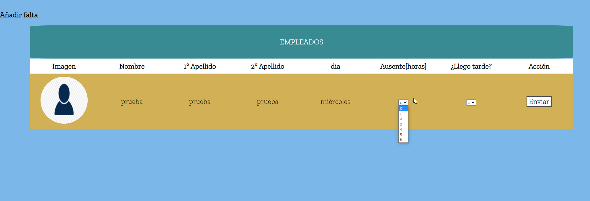

Podemos seleccionar solamente a un usuario, seleccionamos al que queremos añadir falta, hacemos clic en él.
En este caso como es Miércoles pondrá que hay 6 horas, en el apartado llego tarde será igual ya que puede llegar tarde en varias horas si fuese Lunes sería 5 horas, Viernes 4 horas y fines de semana 0 horas ya que es un día 'no-laborable'.